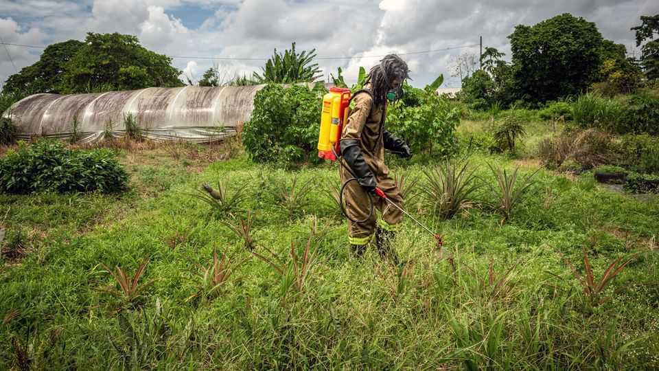
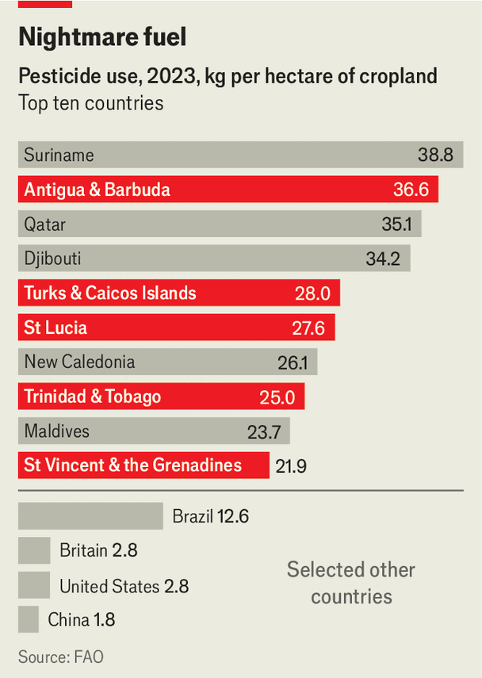

The Caribbean has a problem with pesticides
It uses them more intensively than anywhere in the world
July 2nd 2026

TEEK IS ALARMINGLY relaxed about the noxious substances he uses to make sure his watermelons survive. The young farmer in Antigua is whipping up a toxic brew, mixing ingredients as if preparing a rum cocktail. Where did he learn this delicate art? “YouTube,” he says. He and his cousin go on to drench a four-acre field with their marvellous medicine. Such scenes are common in the Caribbean. It has become a hotspot for pesticide misuse.

The problem is not the total stock of pesticides that the region gets through: Brazil scatters more chemicals in a week than the Caribbean does in a year. Nor is it about toxicity: African countries possess deadlier stockpiles of obsolete or highly hazardous pesticides (HHPs). The challenge in the Caribbean is the intensity with which these poisons are administered. Caribbean islands dominate use per hectare, says the UN’s Food and Agriculture Organisation (FAO). They make up five of the world’s top ten users. Hectare-for-hectare, Saint Lucia sprinkles ten times more than the United States (see chart). Trinidad & Tobago uses 30 times as much as Russia.
There are some good reasons for this. Heat and humidity stimulate pests and weeds. Hilly terrain makes pesticides less effective. Labour shortages increase the incentive for farmers to weed using chemicals. Small markets limit access to natural alternatives that are used elsewhere, says Jonah Ormond, a regulator in Antigua & Barbuda. The plantation crops left behind by colonials are highly vulnerable to disease. And the European shops that buy them will take only perfect produce.
Yet waste and complacency also play a part. Many of the region’s farmers are poorly trained; they don’t detect pests until they are running amok. Even then, they can’t always diagnose what problem they have, says Melvin Medina Navarro of the FAO. So they use the wrong substances, at the wrong time, in the wrong dose.
Governments in the region have been lax about deciding which pesticides farmers should use. Only a few Caribbean countries and dependencies have banned paraquat, a notorious herbicide long prohibited in Brazil, China and the EU. Its main manufacturer is now stopping production amid lawsuits in America claiming links to Parkinson’s disease.
The costs of all this are large. The Caribbean has high rates of prostate cancer and multiple myeloma, both of which are thought to be made more likely by long-term exposure to pesticides. Easy availability of pesticides contributes to high suicide rates, thinks Gamini Manuweera of the Centre for Pesticide Suicide Prevention in Britain. People use it to kill themselves.
Weedkillers run into rivers and bays, killing fish and bleaching coral reefs. Empty containers are dumped, harming livestock and wildlife. Treatments are making soil gradually worse, by killing off things such as worms and bacteria that nourish it, says Michael Joseph, an Antiguan farmer.
Guadeloupe and Martinique are still contaminated with the dangerous insecticide chlordecone decades after its prohibition, notes Luc Multigner of Inserm, a French medical-research agency. That limits what they can grow. It can hang around for 600 years. So the Caribbean may face pesticide problems for centuries yet. ■